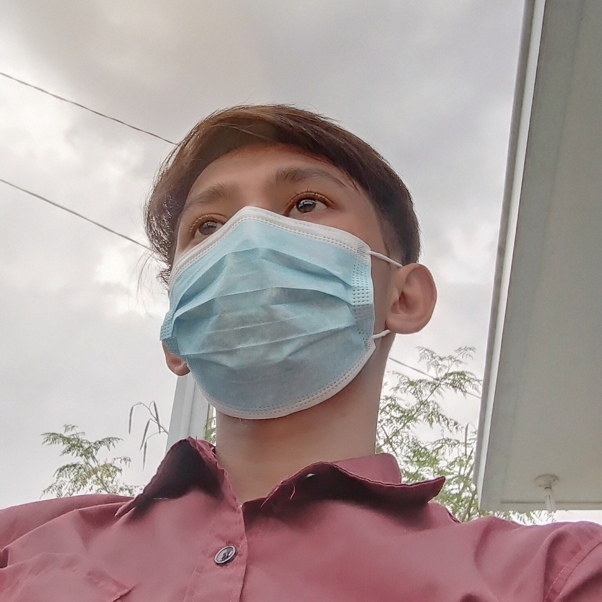
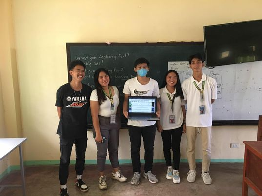

We made this website to encourage the junior highschool to pick Humms Strand
and also they know what subjects are related to humms in LIAN SENIOR HIGHSCHOOL
they will know also the sections of humms also the batch of 2022-2023 HUMMS in LIAN SENIOR
HIGHSCHOOL
the website is focused on encouraging junior high school students to choose the Humanities and Social Sciences (HUMMS) strand when they move on to senior high school. This is a great way to promote interest in the humanities and social sciences, which can provide students with important critical thinking, communication, and problem-solving skills. The website may feature resources such as information on the different subjects offered in the HumSS strand, success stories from students who have chosen the strand, or tips and advice on how to make the best decision when selecting a strand.
The members created This Website
Leader: Aj E. Catli
Age: 20
height: 5'6
Status: Broken
Social Media Account: FACEBOOK Instagram

MEMBERS
NAME: Princess Cathlyn Abella
Age:19
Status: Taken
NAME: Gerome Mendoza
Age: 20
Status: taken
NAME: Byron Carmona Urge
Age:18
Status: taken
NAME: Crismae Villarba
age: 17
Status: Taken
